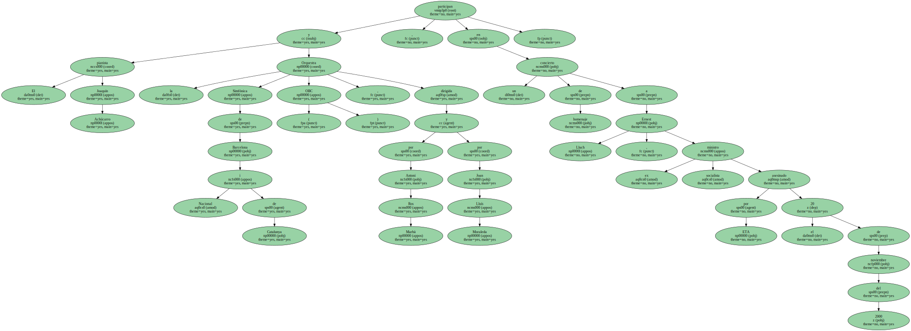
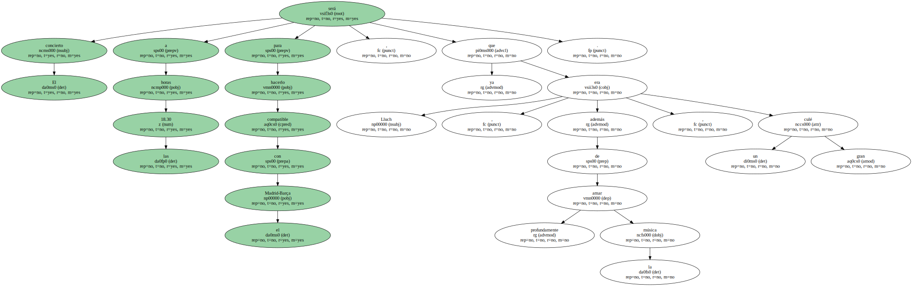
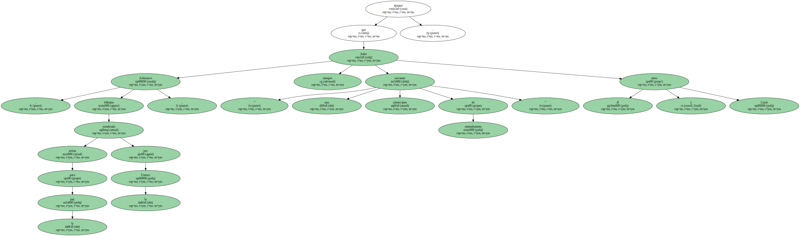
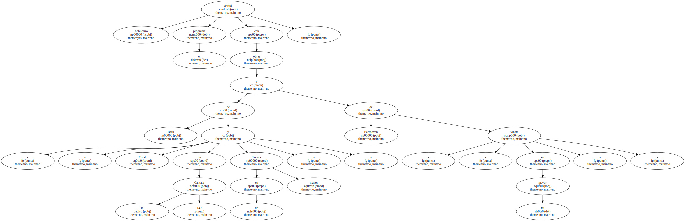
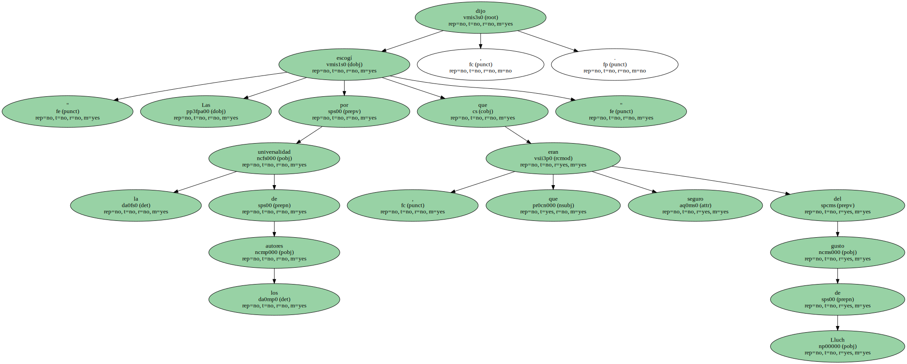
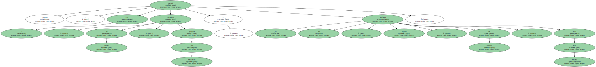
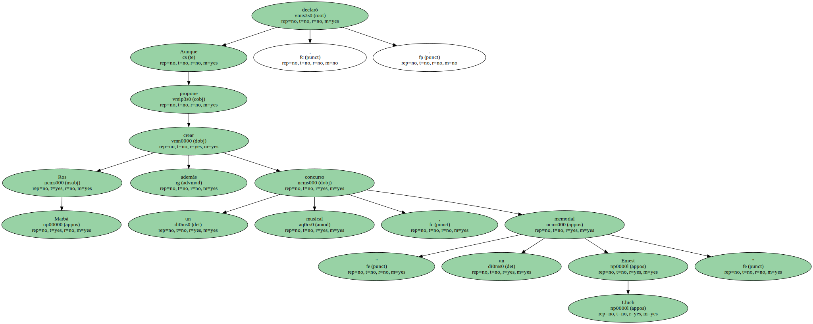

El pianista Joaquín Achúcarro y la Orquestra Simfònica de Barcelona i Nacional de Catalunya ( OBC ) , dirigida por Antoni Ros Marbà y por Joan Lluís Moraleda , participan en un concierto de homenaje a Ernest Lluch , ex ministro socialista asesinado por ETA el 20 de noviembre del 2000.
El concierto será a las 18.30 horas para hacerlo compatible con el Madrid-Barça , ya que Lluch , además de amar profundamente la música , era un gran culé.
" En eso teníamos mucho en común " , recordó Ros Marbà , recién llegado de México para participar en el acto organizado para " ese excelente melómano que fue Lluch ".

Achúcarro , bilbaíno nombrado artista para la paz por la Unesco , destacó que siempre hubo " una corriente subterránea de entendimiento " entre él y Lluch.
Achúcarro abrirá el programa con obras de Bach - - Coral de la Cantata 147 y Tocata en do mayor - - y de Beethoven - - Sonata en mi mayor - -.
" Las escogí por la universalidad de los autores , que seguro que eran del gusto de Lluch " , dijo.
Después , la OBC tocará Empúries , de Toldrà , dirigida por Moraleda , y la Sinfonía 41 , Júpiter , de Mozart , con Ros Marbà.
La recaudación se destinará a editar obras de Lluch que abarcan terrenos diversos.

Aunque Ros Marbà propone además crear un concurso musical , " un memorial Ernest Lluch " , declaró.
